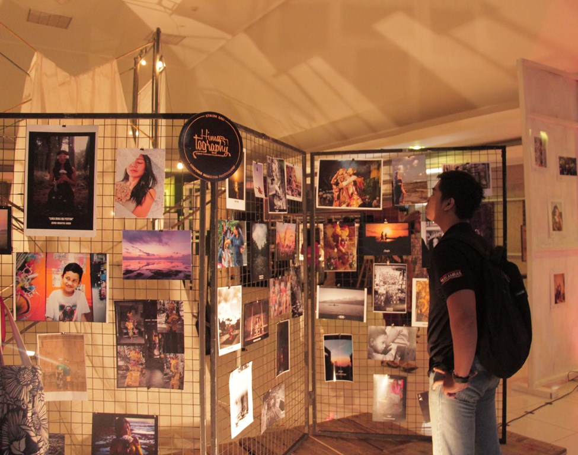
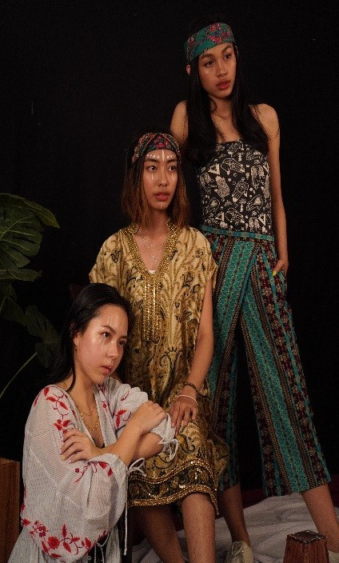
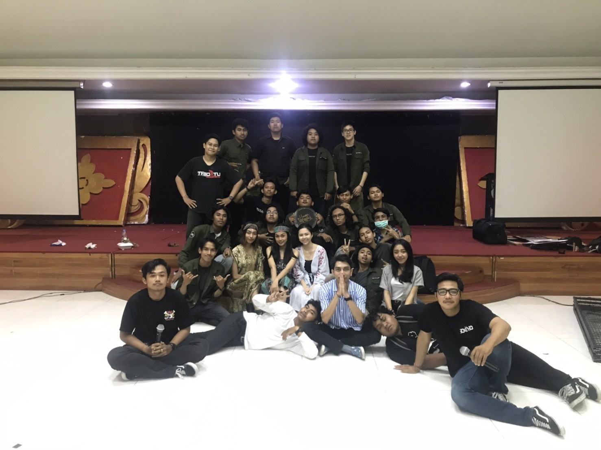

Denpasar- Pameran karya yang bertemakan “ˈlibəˌrāt” dimana pameran ini menampilkan tentang kebebasan dalam berkarya, yang diselenggarakan pada Kamis – Sabtu, 31 Oktober sampai 2 November 2019 di Aula ITB STIKOM Bali. Acara yang diadakan oleh UKM HIMATOGRAPHY ini berlangsung sukses. Terbukti acara ini mampu menyedot banyak pengunjung, tak hanya dari mahasiswa ITB STIKOM Bali saja tapi juga dari luar kampus turut berkunjung untuk melihat pameran foto ini.

Ketua panita Kusa Satrialandipa menjelaskan bahwa acara ini dimulai dari pukul 09:00 pagi, dibuka oleh Kepala Bagian Kemahasiswaan ITB STIKOM Bali yang diwakili oleh I Wayan Gede Narayana, S.Kom.,M.Kom, didampingin oleh pembina UKM , Perwakilan Balma, Senat dan Panitia UKM himatography dengan pengguntingan pita. Acara pameran foto ini ditutup pukul 17:00 Sore.

Pameran foto Himatography ini terdiri dari pameran foto karya anggota dan beberapa pameran tunggal. Pameran tunggal yang berpartisipasi terdiri dari 15 peserta dan terdiri dari 10 kelompok. Yaitu: Adi Pratama Putra, Rupika Jimbara, Dwija, UncleJack Wahyu Saputra, Gus Surya, Bukan Cat AGA, Adit, Yogi, Degus, Raksa, dan Christoper. Kemudian diadakan sesi hunting mini studio setiap harinya, ada 3 model yang berpartisipasi dalam kegiata hunting mini studio, yaitu: Ni Putu Vienna Putri W, Putri Nur Handayani, dan Angelica Pangestu.
Ketua UKM HIMATOGRAPHY Made Gita Karisma mengucapkan banyak terimakasih kepada semua pihak baik dari UKM maupun luar UKM yang sudah membantu menyukseskan pameran foto tahun ini dan tidak lupa juga mengucapkan terimakasi kepada semua pengunjung yang sudah hadir di pameran foto tahun ini.

Pada akhir acara peserta yang berprestasi diberikan hadiah dan dilakukan sesi foto bersama seluruh peserta dan panitia family gathering MCOS 2019. Penghargaan yang diberikan meliputi, juara umum dan kelompok terfavorit.
Contact Us Email : info@stikom-bali.ac.id Phone : (0361)244445 Copyright by Dian Elvira Aryani ITB STIKOM BALI